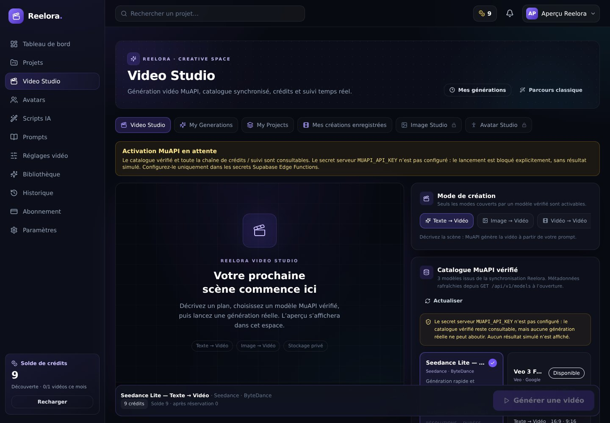
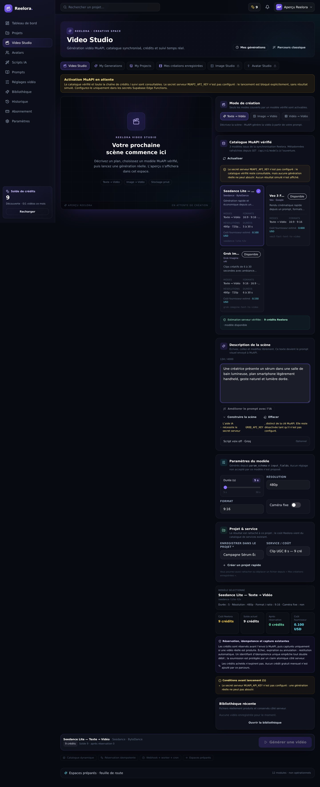
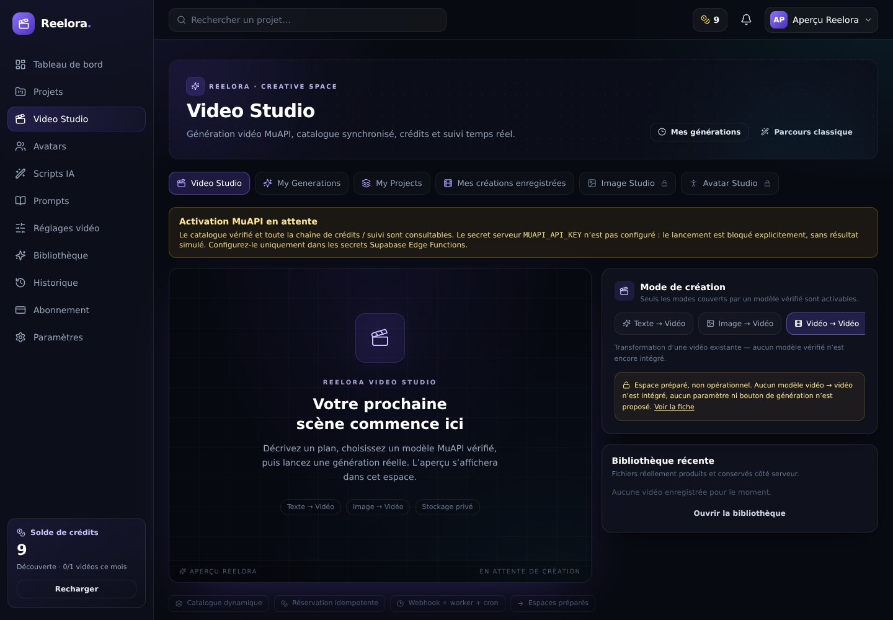
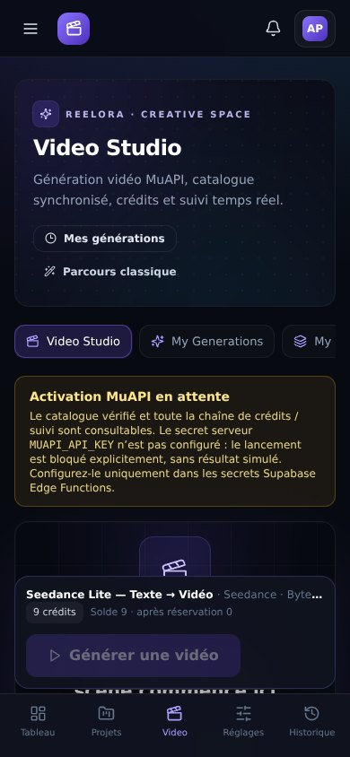
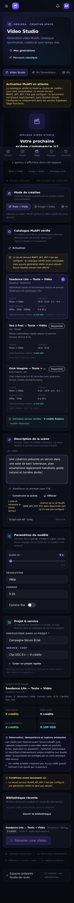
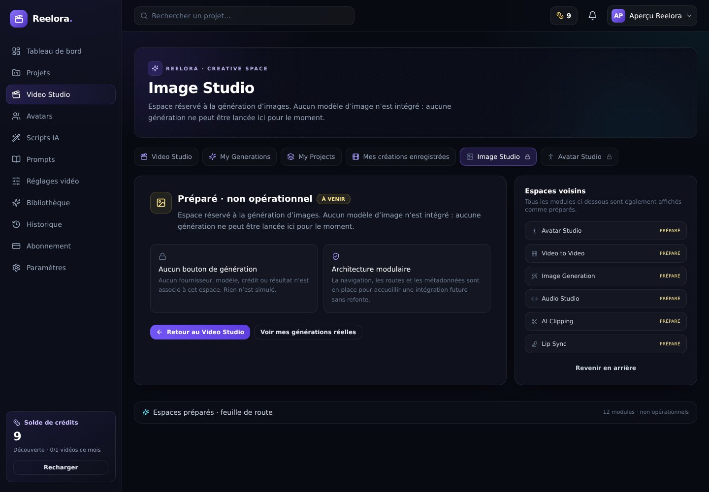
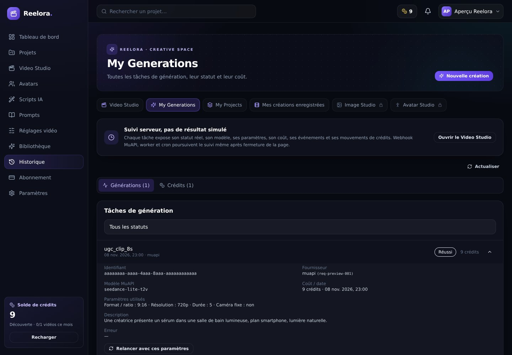
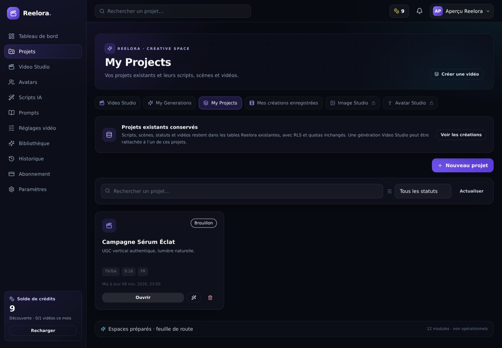
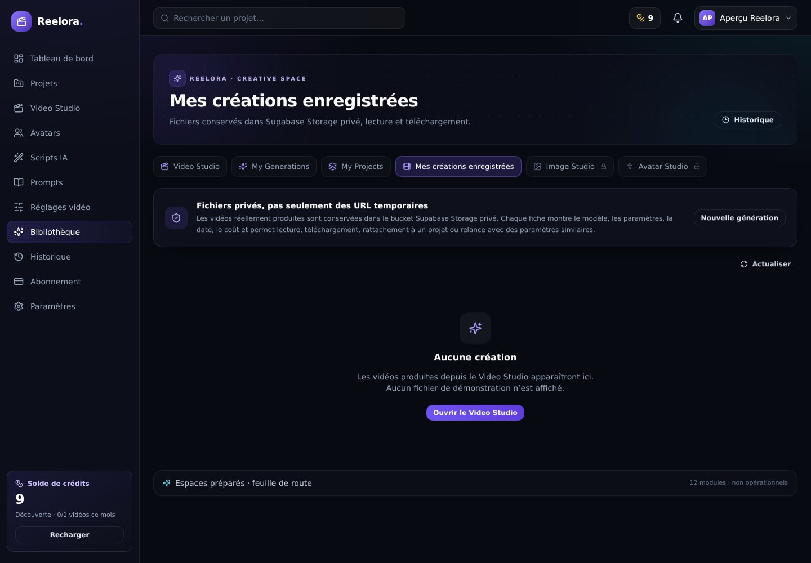

Captures réelles d’un navigateur Chromium headless sur le serveur Vite local. Les réponses Supabase sont des fixtures de test déterministes ; aucun appel MuAPI réel, aucune clé, aucune génération lancée et aucun résultat fictif.
main : deploy-preview-2--saas-ugc-growth.netlify.app. Elle est actuellement protégée par la politique d’accès de l’équipe Netlify.







